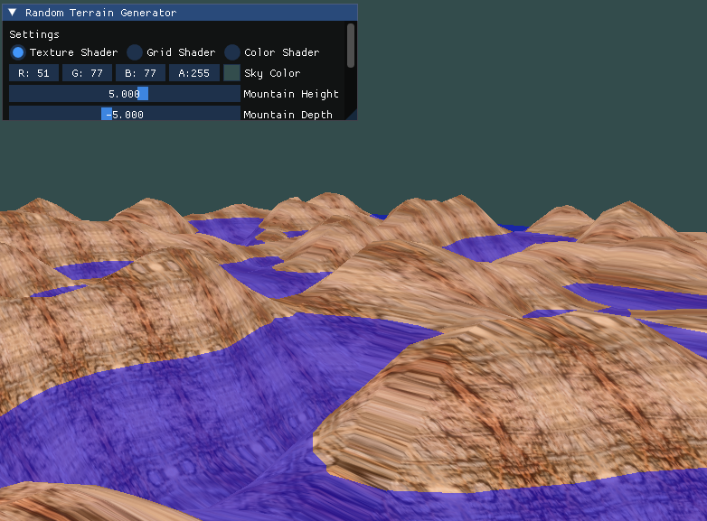

Random terrain generation using Perlin noise, a concept widely used in game development.
An implementation of Perlin noise determines vertex coordinates to create realistic terrain.
Fully controllable camera using mouse and keyboard (WASD, space for up, shift for down).
Includes a texture shader, a grid shader to display vertices, and a color-mixing shader.
GUI allows customization of terrain settings, including water level and Perlin noise parameters.
Use the mouse to look around and WASD keys to move. Space ascends, Shift descends.
Modify terrain properties such as frequency and mountain depth through the GUI.
Keys: T to lock trackball, F for fast movement, U/I/O to switch between shaders.
The application adapts dynamically to different window sizes.
Texture Shader
Grid Shader
Color Shader